Phnom Kulen waterfall in Siem Reap
13.5685, 104.107 · indicative_source_position
View location mapBedded sandstone forms the ledge and waterfall on Phnom Kulen. The plateau links sedimentary geology, forest water catchments and cultural heritage. The marker represents the surveyed waterfall area.
Geology and mineralogy: Sandstone; quartz-rich sandstone documented regionally
Coordinate provenance
Basis: Calculated midpoint of published survey coordinate range. Source: Kosterin & Smith 2020, p.111, Locality 8.
Original coordinate expression: 13.568–569 N; 104.106–108 E.
Area reference, not exact waterfall lip or entrance.
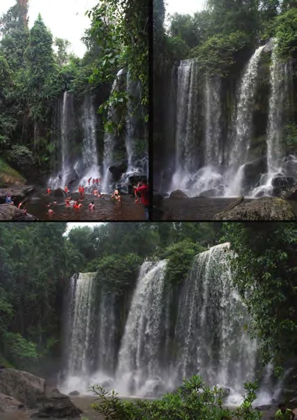
Figure 10. Phnom Kulen waterfall under contrasting water conditions.Source: Kosterin & Smith (2020), Odonata of Phnom Kulen Mts, IDF-Report 154, 99–184, Figure 6, PDF page 104. Credit: Oleg E. Kosterin; Kosterin & Smith 2020, Figure 6.
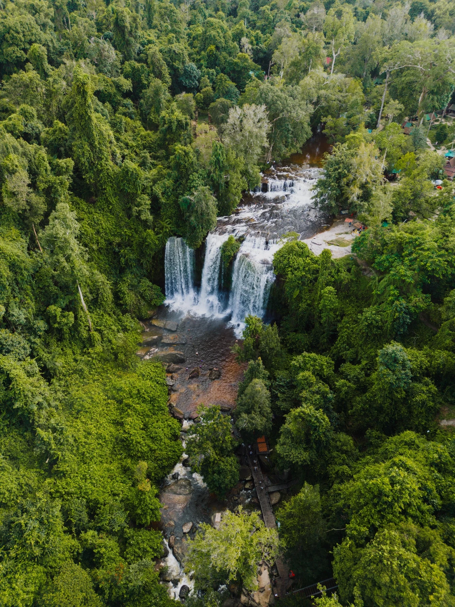
Figure 55. The Kulen waterfall, the plateau’s main visitor attraction for swimming and picnics.Source: Ministry of Environment (2017), Phnom Kulen National Park Management Program 2018–2027, back cover photograph [D46].
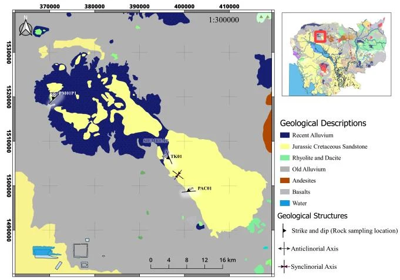
Figure 4. Published geological map and sandstone sampling sites in Kulen.Source: Choon et al. (2022), Techno-Science Research Journal 10(2), 8–16, Figure 1, PDF page 2. Credit: Choon et al. 2022, Figure 1.
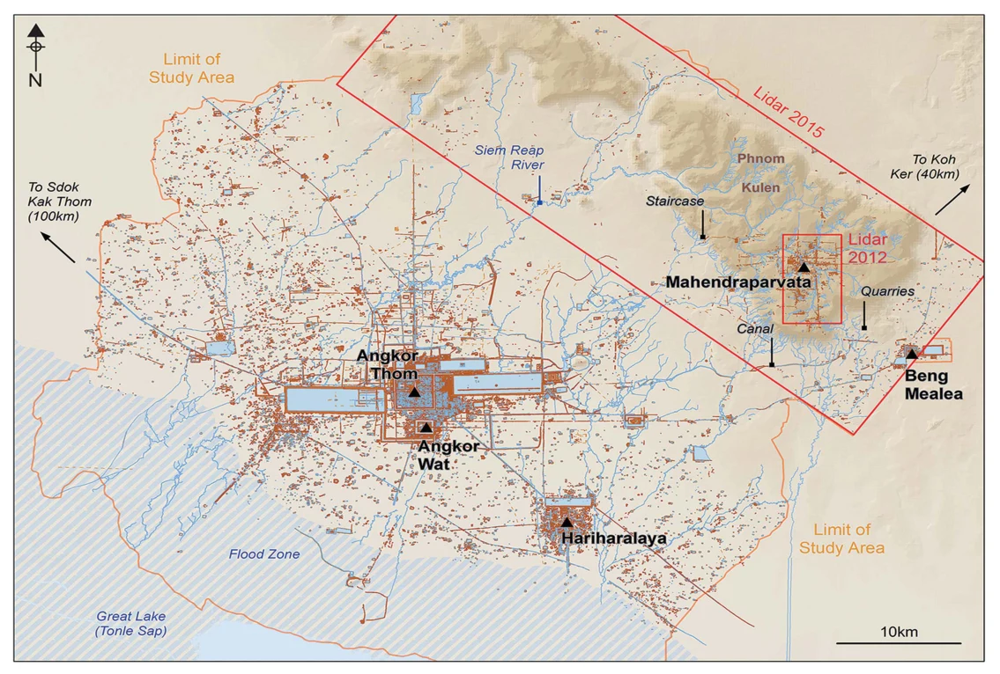
Figure 1. Published archaeological map of Greater Angkor and Phnom Kulen.Source: Chevance et al. (2019), Antiquity 93, 1303–1321, Figure 1, PDF page 2. Credit: Chevance et al. 2019, Figure 1; CC BY 4.0.
Kbal Spean carvings and upstream river in Siem Reap
13.689, 104.015 · indicative_source_position
View location mapAngkorian carvings occupy a sandstone riverbed at Kbal Spean. Flowing water, exposed bedding and forest habitat connect the geological landscape with sacred water heritage. This pin is the midpoint of a surveyed river reach.
Geology and mineralogy: Sandstone; no site-specific mineral analysis supplied
Coordinate provenance
Basis: Calculated midpoint of published survey coordinate range. Source: Kosterin & Smith 2020, p.109, Locality 4.
Original coordinate expression: 13.686–692 N; 104.013–017 E.
Survey reach midpoint; downstream waterfall is a separate reach.
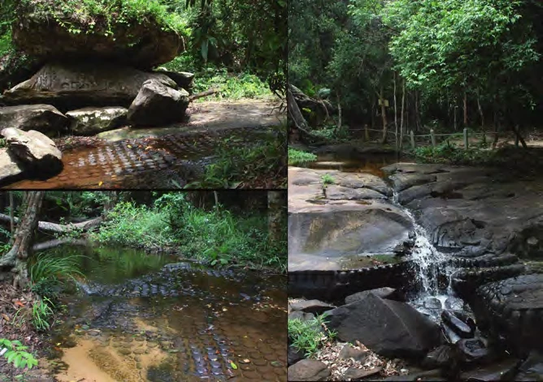
Figure 14. Sandstone riverbed carvings at Kbal Spean.Source: Kosterin & Smith (2020), Odonata of Phnom Kulen Mts, IDF-Report 154, 99–184, Figure 12, PDF page 108. Credit: Oleg E. Kosterin; Kosterin & Smith 2020, Figure 12.
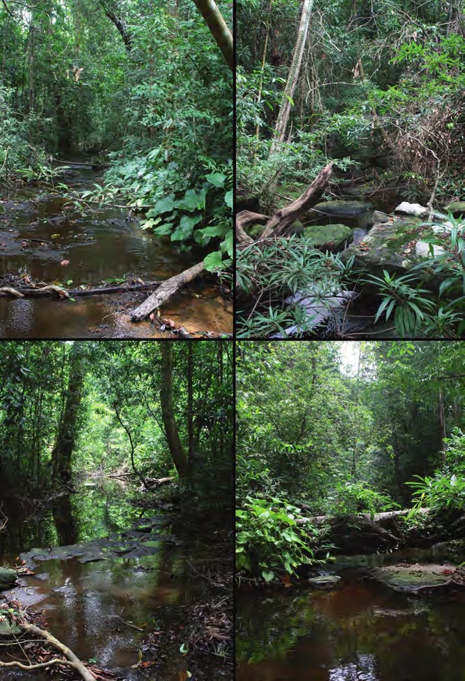
Figure 15. Forest river upstream of the Kbal Spean carvings.Source: Kosterin & Smith (2020), Odonata of Phnom Kulen Mts, IDF-Report 154, 99–184, Figure 14, PDF page 110. Credit: Oleg E. Kosterin; Kosterin & Smith 2020, Figure 14.
Figure 1. Published archaeological map of Greater Angkor and Phnom Kulen.Source: Chevance et al. (2019), Antiquity 93, 1303–1321, Figure 1, PDF page 2. Credit: Chevance et al. 2019, Figure 1; CC BY 4.0.
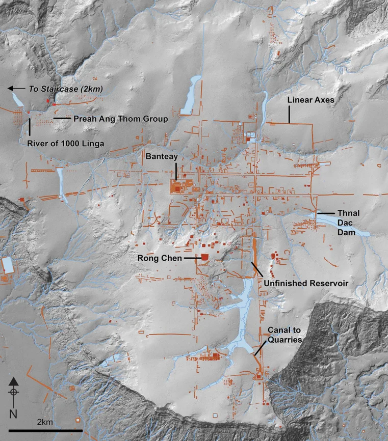
Figure 2. Mahendraparvata archaeological map over lidar hillshade.Source: Chevance et al. (2019), Antiquity 93, 1303–1321, Figure 4, PDF page 8. Credit: Chevance et al. 2019, Figure 4; CC BY 4.0.
Kulen River of 1000 Lingas in Siem Reap
13.566, 104.1035 · indicative_source_position
View location mapLingas carved into sandstone record the cultural use of the Kulen riverbed. This locality is separate from Kbal Spean and provides a link between bedrock, water and religious heritage.
Geology and mineralogy: Sandstone
Coordinate provenance
Basis: Calculated midpoint of published survey coordinate range. Source: Kosterin & Smith 2020, p.111, Locality 7.
Original coordinate expression: 13.565–567 N; 104.102–105 E.
Distinct from Kbal Spean.
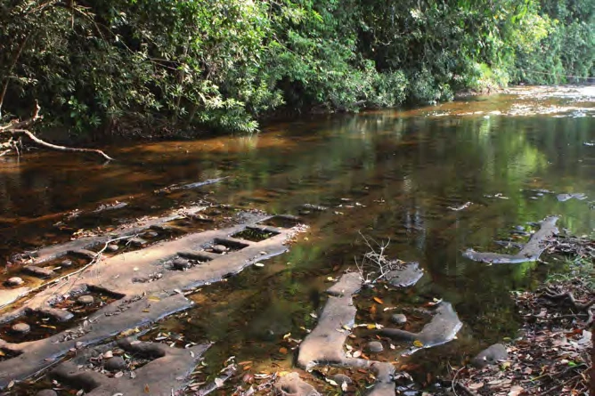
Figure 12. Linga carvings in the sandstone bed of the Kulen river.Source: Kosterin & Smith (2020), Odonata of Phnom Kulen Mts, IDF-Report 154, 99–184, Figure 8, PDF page 106. Credit: Oleg E. Kosterin; Kosterin & Smith 2020, Figure 8.
Figure 4. Published geological map and sandstone sampling sites in Kulen.Source: Choon et al. (2022), Techno-Science Research Journal 10(2), 8–16, Figure 1, PDF page 2. Credit: Choon et al. 2022, Figure 1.
Figure 1. Published archaeological map of Greater Angkor and Phnom Kulen.Source: Chevance et al. (2019), Antiquity 93, 1303–1321, Figure 1, PDF page 2. Credit: Chevance et al. 2019, Figure 1; CC BY 4.0.
Tnal Mareh floating forest in Siem Reap
13.529, 104.1585 · indicative_source_position
View location mapSwamp forest at Tnal Mareh illustrates how drainage and standing water shape the Kulen landscape. The published photograph documents pneumatophores and wetland vegetation; the coordinate is a research locality.
Geology and mineralogy: Sandstone plateau context; no local mineral analysis
Coordinate provenance
Basis: Calculated midpoint of published survey coordinate range. Source: Kosterin & Smith 2020, p.118, Locality 17.
Original coordinate expression: 13.528–530 N; 104.157–160 E.
Research locality; not verified as a public visitor attraction.
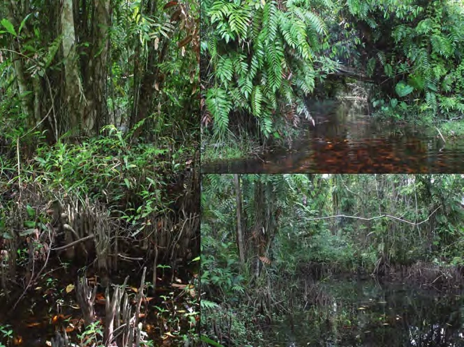
Figure 11. Swamp forest and pneumatophores at Tnal Mareh, Kulen.Source: Kosterin & Smith (2020), Odonata of Phnom Kulen Mts, IDF-Report 154, 99–184, Figure 7, PDF page 105. Credit: Oleg E. Kosterin; Kosterin & Smith 2020, Figure 7.
Figure 4. Published geological map and sandstone sampling sites in Kulen.Source: Choon et al. (2022), Techno-Science Research Journal 10(2), 8–16, Figure 1, PDF page 2. Credit: Choon et al. 2022, Figure 1.
Figure 1. Published archaeological map of Greater Angkor and Phnom Kulen.Source: Chevance et al. (2019), Antiquity 93, 1303–1321, Figure 1, PDF page 2. Credit: Chevance et al. 2019, Figure 1; CC BY 4.0.
Kulen sandstone veal stream in Siem Reap
13.5235, 104.12 · indicative_source_position
View location mapAn exposed sandstone streambed crosses an open veal landscape on Kulen. The locality offers a view of bedrock, surface drainage and vegetation on the plateau.
Geology and mineralogy: Sandstone; quartz arenite and sub-litharenite reported in Kulen studies
Coordinate provenance
Basis: Calculated midpoint of published survey coordinate range. Source: Kosterin & Smith 2020, pp.115–118, Locality 13.
Original coordinate expression: 13.523–524 N; 104.119–121 E.
Research locality; local guide and access confirmation needed.
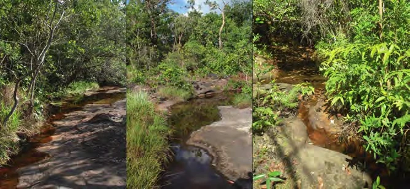
Figure 16. Exposed sandstone streambed and open veal landscape on Kulen.Source: Kosterin & Smith (2020), Odonata of Phnom Kulen Mts, IDF-Report 154, 99–184, Figure 22, PDF page 117. Credit: Oleg E. Kosterin; Kosterin & Smith 2020, Figure 22.
Figure 4. Published geological map and sandstone sampling sites in Kulen.Source: Choon et al. (2022), Techno-Science Research Journal 10(2), 8–16, Figure 1, PDF page 2. Credit: Choon et al. 2022, Figure 1.
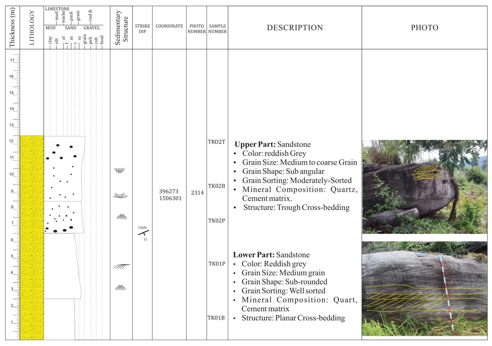
Figure 5. Kulen Takhok measured section and outcrop photographs.Source: Choon et al. (2022), Techno-Science Research Journal 10(2), 8–16, Figure 2, PDF page 3. Credit: Choon et al. 2022, Figure 2.
Srae Tbong former reservoir wetland in Siem Reap
13.5237, 104.1578 · indicative_source_position
View location mapWetland at the former Srae Tbong reservoir connects historic water management with modern wetland habitat. The marker lies within the surveyed eastern margin.
Geology and mineralogy: Sandstone plateau context; wetland sediments not analysed here
Coordinate provenance
Basis: Calculated midpoint of published survey coordinate range. Source: Kosterin & Smith 2020, p.118, Locality 15.
Original coordinate expression: 13.5234–5240 N; 104.1574–1582 E.
Reference point within the surveyed eastern margin.
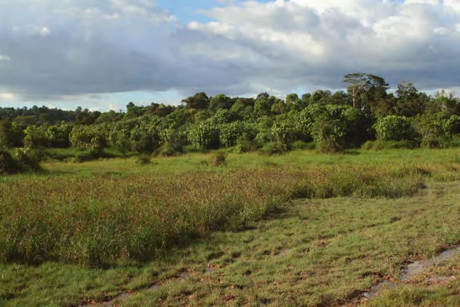
Figure 17. Wetland in the former Srae Tbong reservoir, Kulen.Source: Kosterin & Smith (2020), Odonata of Phnom Kulen Mts, IDF-Report 154, 99–184, Figure 23, PDF page 117. Credit: Oleg E. Kosterin; Kosterin & Smith 2020, Figure 23.
Figure 1. Published archaeological map of Greater Angkor and Phnom Kulen.Source: Chevance et al. (2019), Antiquity 93, 1303–1321, Figure 1, PDF page 2. Credit: Chevance et al. 2019, Figure 1; CC BY 4.0.
Figure 2. Mahendraparvata archaeological map over lidar hillshade.Source: Chevance et al. (2019), Antiquity 93, 1303–1321, Figure 4, PDF page 8. Credit: Chevance et al. 2019, Figure 4; CC BY 4.0.
Sra Srang reservoir, Angkor in Siem Reap
13.43, 103.9035 · indicative_source_position
View location mapSra Srang is a cultural water-heritage locality in the Angkor landscape. Its reservoir setting helps explain the relationship between terrain, water storage and the archaeological city.
Geology and mineralogy: Regional sandstone and laterite construction context
Coordinate provenance
Basis: Calculated midpoint of published survey coordinate range. Source: Kosterin 2020, Miscellaneous faunal data, p.188, SR3.
Original coordinate expression: 13.429–431 N; 103.903–904 E.
Cultural water heritage reference point.
Figure 1. Published archaeological map of Greater Angkor and Phnom Kulen.Source: Chevance et al. (2019), Antiquity 93, 1303–1321, Figure 1, PDF page 2. Credit: Chevance et al. 2019, Figure 1; CC BY 4.0.
Figure 2. Mahendraparvata archaeological map over lidar hillshade.Source: Chevance et al. (2019), Antiquity 93, 1303–1321, Figure 4, PDF page 8. Credit: Chevance et al. 2019, Figure 4; CC BY 4.0.
Phnom Bak fossil / natural heritage site in Banteay Meanchey
Coordinates unresolved · unresolved
Phnom Bak is a reported marine-fossil and natural-heritage locality near Sisophon. The exact protected fossil site must be identified from the official annex before a public map point is assigned.
Geology and mineralogy: Reported fossiliferous limestone; specimen and horizon verification needed
Coordinate provenance
Basis: Unresolved location identity. Source: Sub-decree 71 annex contains official map and coordinate table.
Multiple nearby Phnom Bak hill/peak records disagree; use official annex to identify the protected fossil site before placing a public pin.
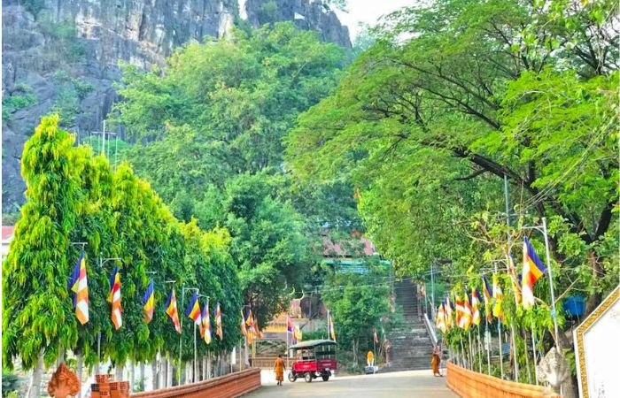
Phnom Bak: tree-lined approach and steps beneath the rocky hill.User-supplied photograph; photographer not identified in the supplied image.
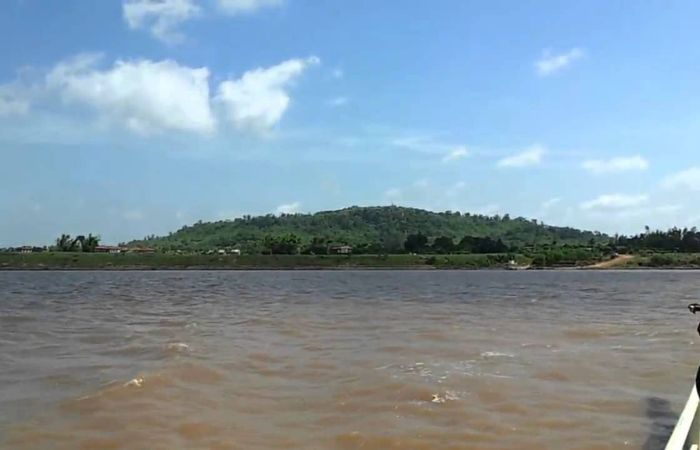
Phnom Bak: view across the water toward a wooded hill.User-supplied photograph; photographer not identified in the supplied image.
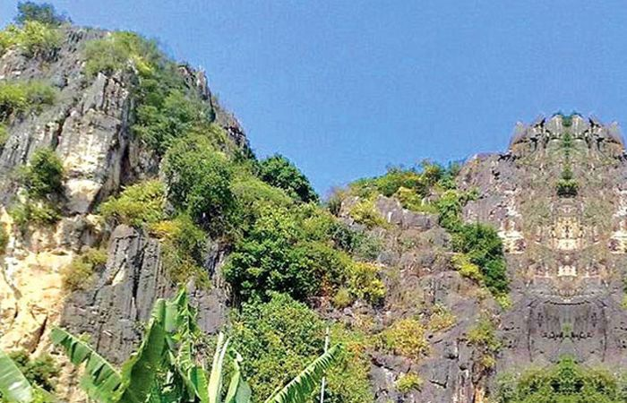
Phnom Bak: exposed cliffs and vegetation.User-supplied photograph; photographer not identified in the supplied image.
Phnom Kang Va fossil site in Banteay Meanchey
Coordinates unresolved · unresolved
Phnom Kang Va is a reported marine-fossil locality near Serey Sophorn. Village or reservoir coordinates cannot identify the fossil exposure; the hill and fossil horizon remain to be located.
Geology and mineralogy: Reported fossiliferous limestone; taxonomy and age require verification
Coordinate provenance
Basis: Exact fossil hill / exposure not verified. Source: Fossils at Kang Va mountain.
Do not substitute Kang Va village or reservoir coordinates for the fossil exposure.
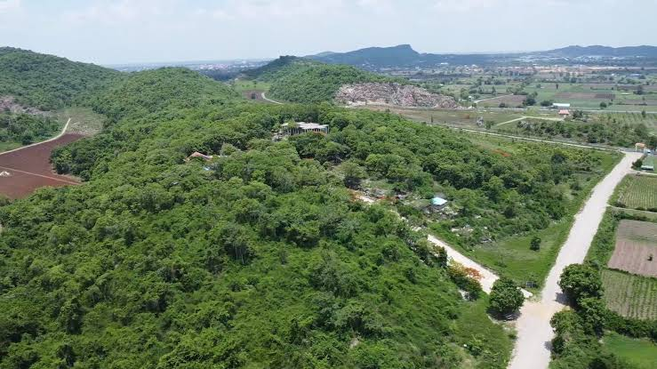
Phnom Kang Va: aerial view of wooded hills and the surrounding landscape.User-supplied photograph; photographer not identified in the supplied image.
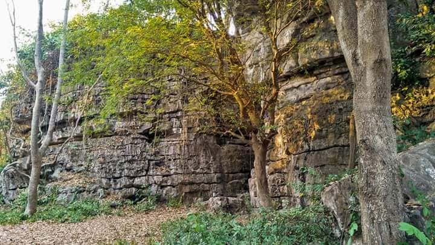
Phnom Kang Va: layered rock exposure beneath woodland.User-supplied photograph; photographer not identified in the supplied image.
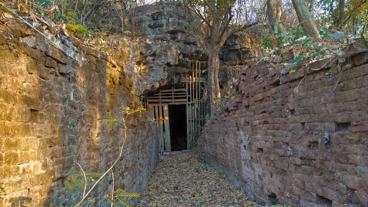
Phnom Kang Va: rock passage with a gated entrance.User-supplied photograph; photographer not identified in the supplied image.
Tra Peang Cha Sandstone Quarry Geosite in Siem Reap
13.578, 104.112 · indicative_source_position
View location mapAncient quarry traces at Tra Peang Cha link Kulen sandstone with Angkorian building stone. The catalogue describes extraction marks and tool channels; regional maps place the site in the candidate Kulen study area.
Geology and mineralogy: Quartz-rich sandstone; regional quartz arenite and sub-litharenite
Coordinate provenance
Basis: Published geosite inventory. Source: ITC Kulen Geopark Assessment 2026.
Original coordinate expression: Tra Peang Cha, Phnom Kulen.
Ancient Angkorian sandstone quarry outcrop with visible block extraction marks and tool channels.
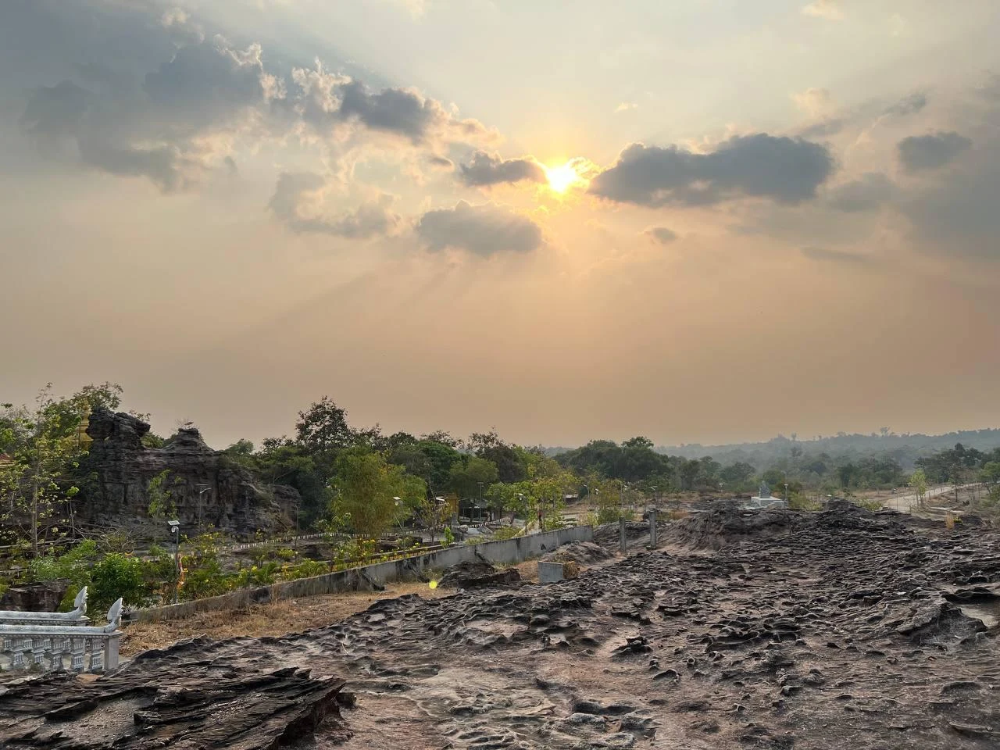
Sandstone quarry photograph grouped under catalogue Figure 30; exact quarry identity requires confirmation.Source: Eng et al. (2025/2026), Assessing Geodiversity in the Kulen Area, ITC Faculty of Geo-resources and Geotechnical Engineering, Slide 12. Credit: ITC GGG Geoteam.
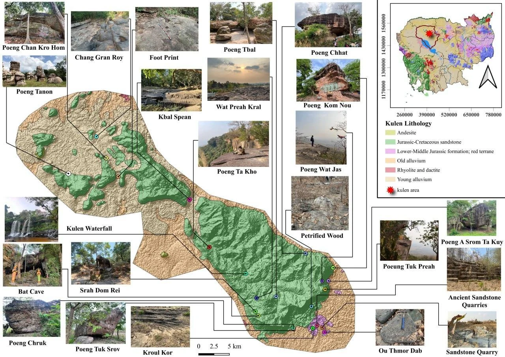
Figure 26. Published geosite inventory map of the Kulen candidate geopark area (23 geosites).Source: Eng et al. (2025/2026), Assessing Geodiversity in the Kulen Area, Siem Reap Province, Cambodia: A Potential Geopark Candidate, ITC Faculty of Geo-resources and Geotechnical Engineering, Slide 8. Credit: ITC GGG Geoteam.
Figure 4. Published geological map and sandstone sampling sites in Kulen.Source: Choon et al. (2022), Techno-Science Research Journal 10(2), 8–16, Figure 1, PDF page 2. Credit: Choon et al. 2022, Figure 1.
Figure 1. Published archaeological map of Greater Angkor and Phnom Kulen.Source: Chevance et al. (2019), Antiquity 93, 1303–1321, Figure 1, PDF page 2. Credit: Chevance et al. 2019, Figure 1; CC BY 4.0.
Poeung Takho Viewpoint and Escarpment in Siem Reap
13.553, 104.095 · indicative_source_position
View location mapPoeung Takho is an escarpment viewpoint on the Kulen sandstone plateau. Thick sandstone beds and the contrast between plateau and plain support landscape interpretation.
Geology and mineralogy: Quartz arenite reported in the catalogue; regional sandstone evidence
Coordinate provenance
Basis: Published geosite inventory. Source: ITC Kulen Geopark Assessment 2026.
Original coordinate expression: Poeung Takho, Phnom Kulen.
Panoramic cliff viewpoint exposing thick beds of Jurassic-Cretaceous quartz arenite.
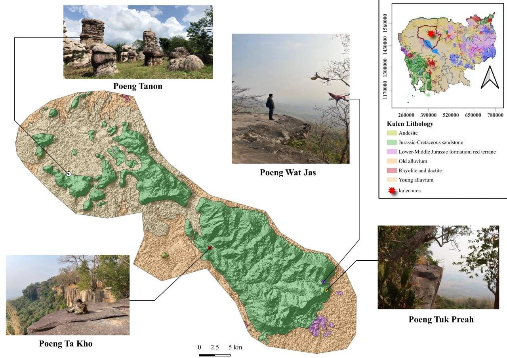
Figure 28. Published map of scenic viewing spots across the Kulen sandstone escarpment (4 viewing spots).Source: Eng et al. (2025/2026), Assessing Geodiversity in the Kulen Area, ITC Faculty of Geo-resources and Geotechnical Engineering, Slide 10. Credit: ITC GGG Geoteam.
Figure 5. Kulen Takhok measured section and outcrop photographs.Source: Choon et al. (2022), Techno-Science Research Journal 10(2), 8–16, Figure 2, PDF page 3. Credit: Choon et al. 2022, Figure 2.
Figure 4. Published geological map and sandstone sampling sites in Kulen.Source: Choon et al. (2022), Techno-Science Research Journal 10(2), 8–16, Figure 1, PDF page 2. Credit: Choon et al. 2022, Figure 1.
Figure 1. Published archaeological map of Greater Angkor and Phnom Kulen.Source: Chevance et al. (2019), Antiquity 93, 1303–1321, Figure 1, PDF page 2. Credit: Chevance et al. 2019, Figure 1; CC BY 4.0.
Lake Yeak Laom Volcanic Maar in Ratanakiri
13.725, 107.018 · indicative_source_position
View location mapLake Yeak Laom is a near-circular volcanic crater lake in Ratanakiri. Its basin, surrounding forest and Tampuen cultural heritage connect volcanic landforms with community stewardship. A precise crater age is not assigned here.
Geology and mineralogy: Regional basalt and zircon context; no lake-specific mineral analysis
Coordinate provenance
Basis: Official national geopark register. Source: Cambodia CCOP Country Report 2018.
Original coordinate expression: 13.725 N, 107.018 E.
Near-circular 4,000-year-old basaltic volcanic maar crater lake of high cultural and geomorphological significance.
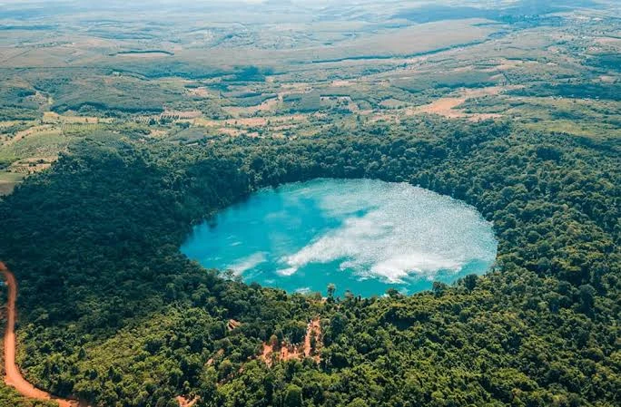
Lake Yeak Laom aerial photograph grouped under catalogue Figure 49; individual image credit follows catalogue attribution.Source: General Department of Mineral Resources (GDMR), Country Report of Cambodia, CCOP Annual Session 2018. Credit: GDMR.
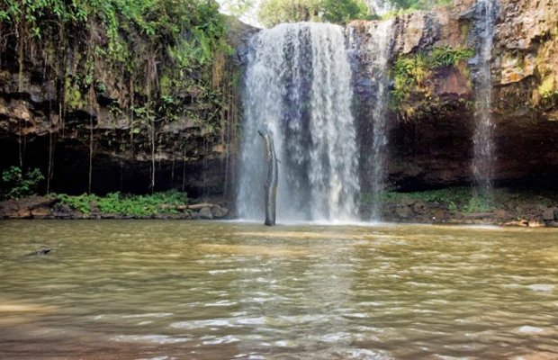
Figure 51. Katieng waterfall cascading over columnar jointed Neogene plateau basalt, Ratanakiri Province.Source: General Department of Mineral Resources (GDMR), Country Report of Cambodia, CCOP Annual Session 2018. Credit: GDMR.
Nam Lea / Rom El stone dome in Mondulkiri
12.53797, 107.53572 · indicative_source_position
View location mapNam Lea, also called Nam Lear or Rom El, is a bare rock dome rising above the Mondulkiri forest. Its rock type, age and origin remain unresolved in the reviewed studies. Regional basalt imagery is contextual evidence, not a photograph or identification of the dome.
Geology and mineralogy: Unresolved; do not label the dome basalt without site-specific evidence
Coordinate provenance
Basis: Published local-operator marker. Source: Rom El (Nam Lear) Stone Mountain.
Original coordinate expression: 12.53797, 107.53572.
Dome marker, not sanctuary centroid. No verified site-specific rock identification or age from the reviewed papers.
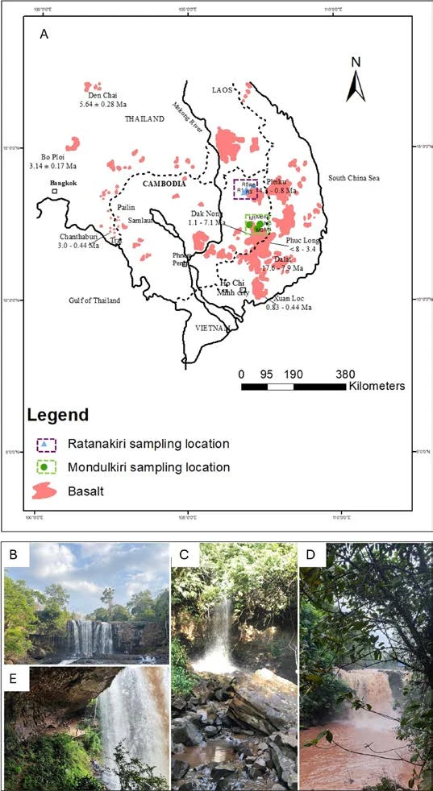
Figure 6. Regional basalt map with Bou Sra, Dakdam, Ka Chanh and Cha Ong waterfall photographs.Source: Seng et al. (2024), Techno-Science Research Journal 12 Special Issue, 126–133, Figure 1, PDF page 2. Credit: Seng et al. 2024, Figure 1; map panel adapted by original authors from their reference 10.
Bou Sra waterfall in Mondulkiri
12.56702, 107.4183 · indicative_source_position
View location mapBou Sra waterfall descends over volcanic rock in the Mondulkiri landscape. The regional publication includes Bou Sra in panel B alongside other northeastern waterfalls and a basalt map.
Geology and mineralogy: Basalt reported regionally; no site-specific mineral inventory
Coordinate provenance
Basis: Published local-operator marker. Source: Bu Sra Waterfall.
Original coordinate expression: 12.56702, 107.4183.
Seng et al. 2024 Figure 1B provides published site photograph; marker accuracy not surveyed here.
Figure 6. Regional basalt map with Bou Sra, Dakdam, Ka Chanh and Cha Ong waterfall photographs.Source: Seng et al. (2024), Techno-Science Research Journal 12 Special Issue, 126–133, Figure 1, PDF page 2. Credit: Seng et al. 2024, Figure 1; map panel adapted by original authors from their reference 10.
Pulung waterfall in Mondulkiri
12.50563, 107.2792 · indicative_source_position
View location mapPulung is a waterfall locality identified by a published Mondulkiri operator map. The catalogue supplies a location lead but no site-specific geological description or verified photograph.
Geology and mineralogy: Unresolved; field identification required
Coordinate provenance
Basis: Published local-operator marker. Source: Pulung Waterfall.
Original coordinate expression: 12.50563, 107.2792.
No verified site photograph supplied in the catalogue. Add a field photograph; do not substitute a photograph of another locality.
Leng Kun waterfall and cave area in Mondulkiri
12.37787, 107.12796 · indicative_source_position
View location mapLeng Kun is recorded as a waterfall and cave area in Mondulkiri. The supplied marker identifies the area rather than a surveyed cave entrance; local confirmation is needed for access and interpretation.
Geology and mineralogy: Unresolved; cave host rock not established in the catalogue
Coordinate provenance
Basis: Published local-operator marker. Source: Leng Kun Waterfall and Bat Cave.
Original coordinate expression: 12.37787, 107.12796.
Public access and specific cave entrance require local confirmation.
No verified site photograph supplied in the catalogue. Add a field photograph; do not substitute a photograph of another locality.
Phnom Chhngok cave entrance in Kampot
10.64224, 104.26964 · indicative_source_position
View location mapA limestone cave at Phnom Chhngok contains a pre-Angkorian brick shrine among natural cave formations. The locality connects carbonate dissolution, underground space and religious heritage. Regional karst photographs are context rather than verified photographs of this entrance.
Geology and mineralogy: Limestone; carbonate cave formations; no analytical mineral list
Coordinate provenance
Basis: OpenStreetMap cave entrance via Mapcarta. Source: OSM node 3971467859.
Original coordinate expression: 10.64224 N; 104.26964 E.
Coordinate data: © OpenStreetMap contributors, ODbL. Cave spelling varies: Chhnork / Chhngauk.
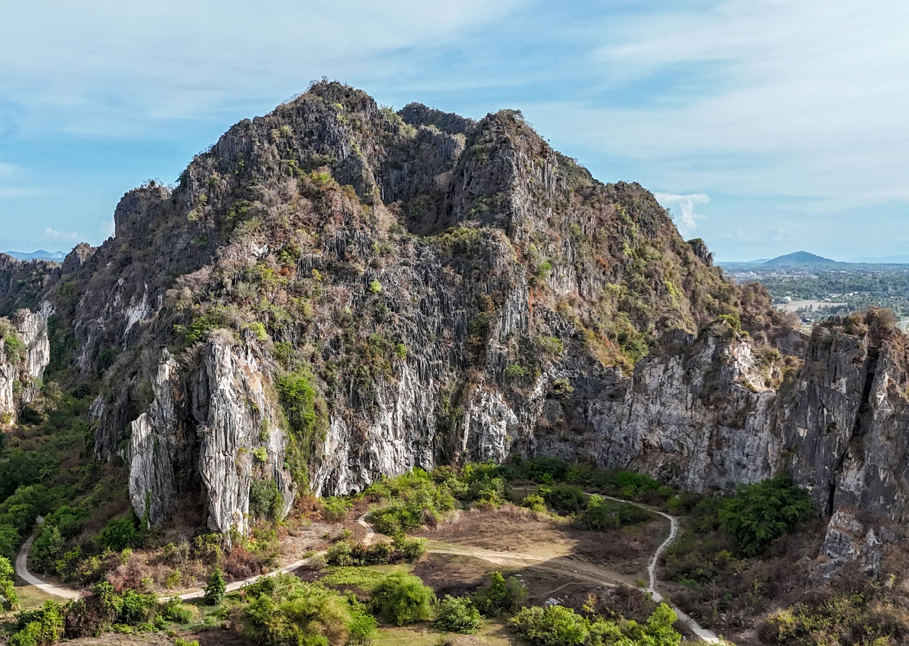
Figure 24. Isolated limestone karst hill in Kampot Province.Source: Furey / Fauna & Flora (©2025; released 2026), Cambodian Caves: Guidelines for Sustainable Development and Management, Photograph, printed p. 8, PDF page 7. Credit: Nehru Pry; Fauna & Flora, Cambodian Caves.
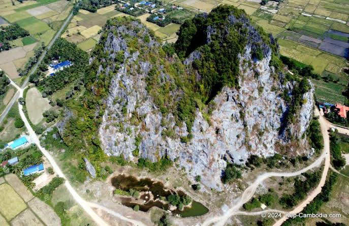
Karst hill and surrounding fields; supplied as replacement regional context for Figure 25.Visible credit: © 2024 Kep-Cambodia.com.
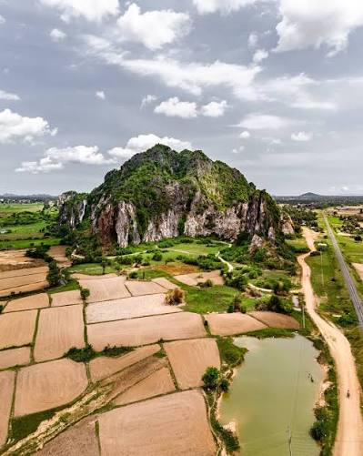
Karst landscape among fields and a pond; supplied as replacement regional context for Figure 25.User-supplied photograph; photographer not identified in the supplied image.
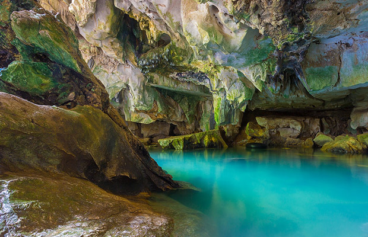
Cave pool and rock formations; supplied as replacement regional context for Figure 25.User-supplied photograph; photographer not identified in the supplied image.
Kampong Trach Water Pond Cave in Kampot
10.57993, 104.47122 · indicative_source_position
View location mapWater Pond Cave is a specific entrance in the Kampong Trach karst, rather than a point representing the entire complex. The surrounding limestone landscape records cave development by dissolution and supports cultural and biodiversity interpretation.
Geology and mineralogy: Limestone; no site-specific mineral analysis
Coordinate provenance
Basis: OpenStreetMap cave entrance via Mapcarta. Source: OSM node 5047121248.
Original coordinate expression: 10.57993 N; 104.47122 E.
Specific named cave, not the whole karst complex. Coordinate data: © OpenStreetMap contributors, ODbL.
Figure 24. Isolated limestone karst hill in Kampot Province.Source: Furey / Fauna & Flora (©2025; released 2026), Cambodian Caves: Guidelines for Sustainable Development and Management, Photograph, printed p. 8, PDF page 7. Credit: Nehru Pry; Fauna & Flora, Cambodian Caves.
Karst hill and surrounding fields; supplied as replacement regional context for Figure 25.Visible credit: © 2024 Kep-Cambodia.com.
Karst landscape among fields and a pond; supplied as replacement regional context for Figure 25.User-supplied photograph; photographer not identified in the supplied image.
Cave pool and rock formations; supplied as replacement regional context for Figure 25.User-supplied photograph; photographer not identified in the supplied image.
Tatai waterfall in Koh Kong
11.586944, 103.095833 · indicative_source_position
View location mapThe Tatai River drops across broad exposed bedrock ledges in Koh Kong. Published waterfall and river photographs document the historical landscape; the research coordinate identifies the vicinity rather than an exact modern visitor entrance.
Geology and mineralogy: Bedrock exposed; lithology not established by the photograph alone
Coordinate provenance
Basis: Converted published DMS coordinate. Source: Kosterin 2010, p.53.
Original coordinate expression: 11°35′13″ N; 103°05′45″ E.
Research point differs by about 150 m from current OSM waterfall marker; use as site vicinity until checked.
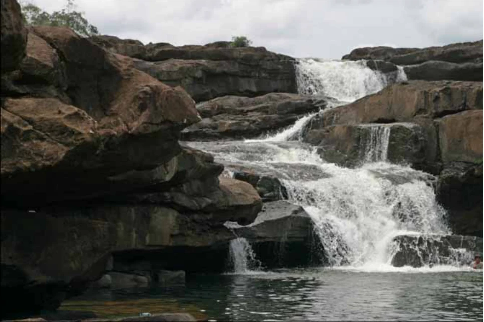
Figure 20. Tatai waterfall over exposed bedrock.Source: Kosterin (2010), IDF-Report 29, 1–75, Figure 12, PDF page 21. Credit: Oleg E. Kosterin; Kosterin 2010, Figure 12.
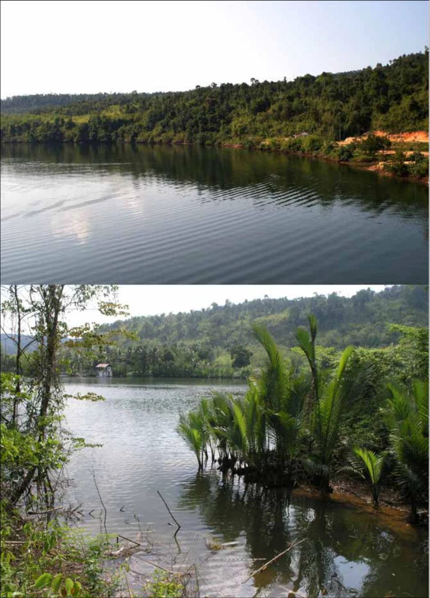
Figure 21. Tatai river landscapes at Phnom Doung bridge.Source: Kosterin (2010), IDF-Report 29, 1–75, Figure 16, PDF page 26. Credit: Oleg E. Kosterin; Kosterin 2010, Figure 16.
Kbal Chhay cascades in Preah Sihanouk
10.675694, 103.608611 · indicative_source_position
View location mapKbal Chhay is a cascade landscape near Sihanoukville. A published photograph records the rock ledges and flowing water. The marker is the midpoint of a historical surveyed reach.
Geology and mineralogy: Exposed bedrock; site-specific lithology not confirmed
Coordinate provenance
Basis: Calculated midpoint of published DMS coordinate range. Source: Kosterin 2010, p.55.
Original coordinate expression: 10°40′29–36″ N; 103°36′30–32″ E.
Survey reach midpoint; not a car park.
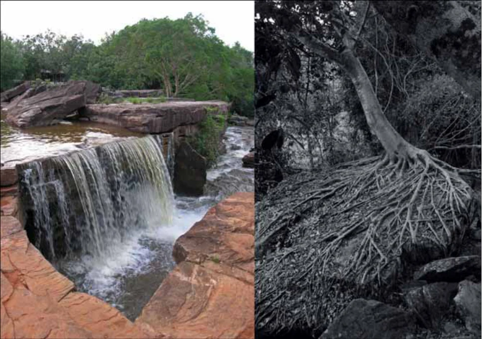
Figure 22. Kbal Chhay cascades near Sihanoukville.Source: Kosterin (2010), IDF-Report 29, 1–75, Figure 27, PDF page 37. Credit: Oleg E. Kosterin; Kosterin 2010, Figure 27.
Bokor hill station survey area in Kampot
10.626944, 104.024444 · indicative_source_position
View location mapThe historic Bokor hill-station area lies on a sandstone plateau above the coast. The gallery combines a 2010 landscape view with regional escarpment and forest evidence. This marker is a survey-area midpoint, not a summit or hotel entrance.
Geology and mineralogy: Quartz-rich sandstone; regional quartz arenite
Coordinate provenance
Basis: Calculated midpoint of published DMS coordinate range. Source: Kosterin 2010, p.56.
Original coordinate expression: 10°37′19–55″ N; 104°01′18–38″ E.
Historical survey area midpoint; not summit, hotel or park gate.
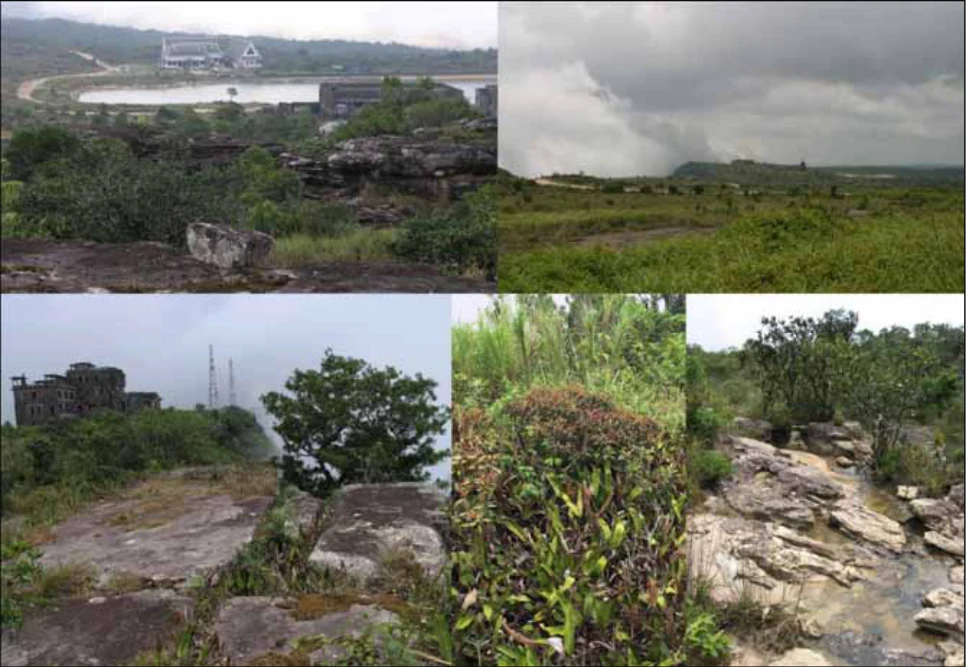
Figure 23. Bokor hill station landscape photographed in 2010.Source: Kosterin (2010), IDF-Report 29, 1–75, Figure 31, PDF page 42. Credit: Oleg E. Kosterin; Kosterin 2010, Figure 31.
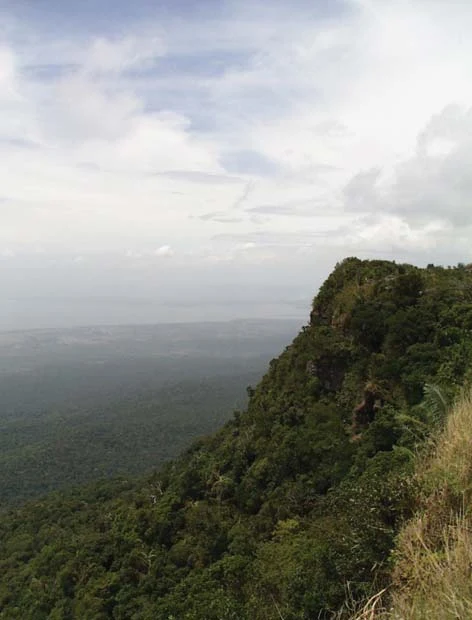
Figure 36. South-facing sandstone escarpment of the Bokor Plateau looking out to the Gulf of Thailand, with Phu Quoc Island (Vietnam) in the distance, March 2001.Source: Rundel & Middleton (2017), Cambodian Journal of Natural History 2017(1), 17–37, Figure 1. Credit: © Rasoul Sharifi.
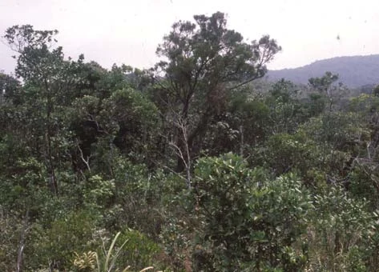
Figure 37. Stunted forest of the Bokor Plateau with emergent trees of Dacrydium elatum, March 2001.Source: Rundel & Middleton (2017), Cambodian Journal of Natural History 2017(1), 17–37, Figure 2. Credit: © Philip Rundel.
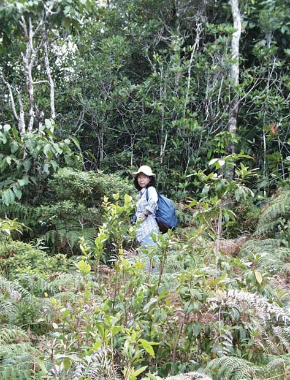
Figure 38. Transition from montane wet evergreen forest to stunted forest near Popokvil Waterfall on the Bokor Plateau, March 2001.Source: Rundel & Middleton (2017), Cambodian Journal of Natural History 2017(1), 17–37, Figure 3. Credit: © Rasoul Sharifi.
Kep National Park eastern forest edge in Kep
10.490278, 104.303611 · indicative_source_position
View location mapThis point marks a historical biodiversity sampling locality at the eastern forest edge of Kep National Park. It represents coastal forest context and is not the park headquarters or a surveyed geological exposure.
Geology and mineralogy: No site-specific geological or mineral analysis supplied
Coordinate provenance
Basis: Converted published DMS coordinate. Source: Kosterin 2010, p.56.
Original coordinate expression: 10°29′25″ N; 104°18′13″ E.
Historical biodiversity sampling locality; not park headquarters.
No verified site photograph supplied in the catalogue. Add a field photograph; do not substitute a photograph of another locality.
Ream recreation centre survey area in Preah Sihanouk
10.515833, 103.617222 · indicative_source_position
View location mapThe Ream recreation-centre point is a historical coastal biodiversity survey locality. It provides a reference for the wider coastal landscape; its modern access and surroundings require confirmation.
Geology and mineralogy: No site-specific lithology or mineral analysis supplied
Coordinate provenance
Basis: Converted published DMS coordinate. Source: Kosterin 2010, p.55.
Original coordinate expression: 10°30′57″ N; 103°37′02″ E.
Historical survey location from 2010; confirm current access and landscape.
No verified site photograph supplied in the catalogue. Add a field photograph; do not substitute a photograph of another locality.
Koh Paur Dinosaur Fossil Site in Koh Kong
11.5368, 103.0245 · indicative_source_position
View location mapKoh Paur preserves a sauropod fibula from continental Lower Cretaceous sandstone. Published figures show the fossil in its host rock and cross-bedded sandstone, linking sedimentary environments with Cambodia’s dinosaur record.
Geology and mineralogy: Sandstone of the Grès Supérieurs; fossil bone MOEC-1
Coordinate provenance
Basis: Published discovery site coordinates and island location. Source: Lim et al. 2023.
Original coordinate expression: Koh Paur island, Koh Kong Province.
Discovery locality of Cambodia’s first dinosaur (Lower Cretaceous sauropod fibula MOEC-1).
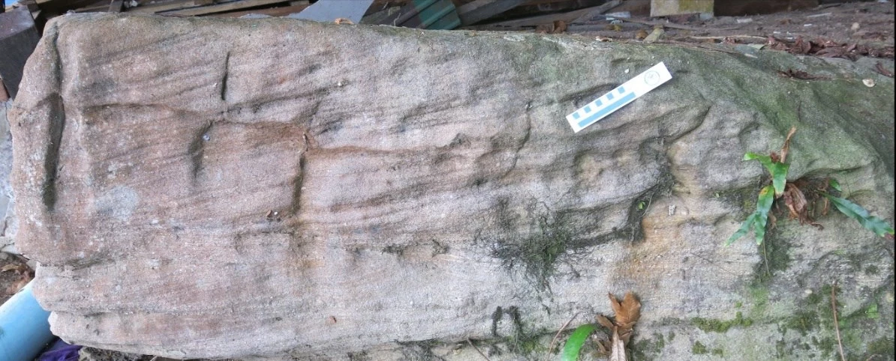
Figure 40. Cross-bedded sandstone in the lower part of the Grès Supérieurs on Koh Paur Island, Koh Kong Province.Source: Buffetaut et al. (2024), Fossil-bearing non-marine Mesozoic formations of south-western Cambodia, Proceedings of GEOSEA 2024, Khon Kaen, 55–63, Figure 1. Credit: Buffetaut et al. 2024.
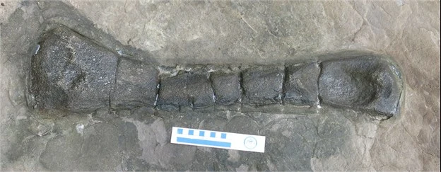
Figure 44. Sauropod dinosaur fibula in situ in greyish-brown sandstone of the lower part of the Grès Supérieurs at Koh Paur Island, Koh Kong Province.Source: Buffetaut et al. (2024), Fossil-bearing non-marine Mesozoic formations of south-western Cambodia, Proceedings of GEOSEA 2024, Khon Kaen, 55–63, Figure 5. Credit: Buffetaut et al. 2024.
Koh Moul Mesozoic Fossil Horizon in Koh Kong
11.712, 103.008 · coordinate_conflict_hold
Intertidal beds at Koh Moul preserve turtle remains and fossil wood. Published specimen plates and the site map support palaeontological interpretation. The catalogue coordinate conflicts with the published geographic description and is withheld from the upload layer.
Geology and mineralogy: Sandstone, siltstone and mudstone; fossil turtle and conifer-type wood
Coordinate provenance
Basis: Published geological survey locality. Source: Buffetaut et al. 2024.
Original coordinate expression: Koh Moul island, Koh Kong Province.
Continental Mesozoic sandstone exposures yielding fossil freshwater turtles and fossil wood. HOLD: Tong et al. 2026 describes Koh Moul about 30 km south of Koh Kong and Koh Paur about 30 km north of Koh Moul. Catalogue latitude 11.712 is north of its Koh Paur latitude 11.5368. https://doi.org/10.3390/d18050249
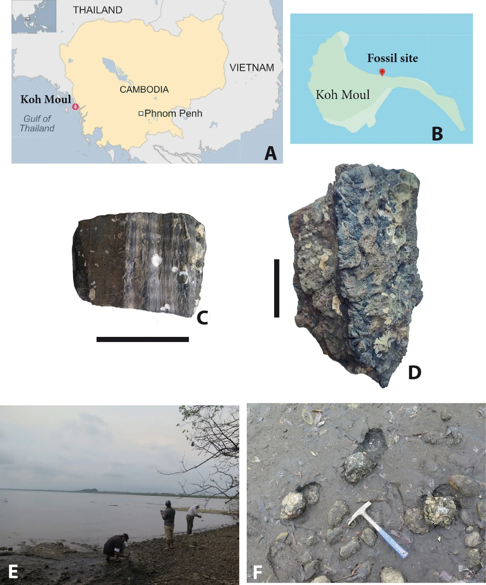
Figure 45. (A) Geographical position of Koh Moul in south-western Cambodia; (B) location of the fossil site on Koh Moul; (C) conifer-type fossil wood (tracheidoxyl); (D) turtle bridge peripherals (MOEC-4) before preparation; (E, F) beach outcrop of the fossil site at low tide. Scale bar = 5 cm.Source: Tong et al. (2026), Turtle remains from Koh Moul (SW Cambodia) and their stratigraphical implications, Diversity 18(5), 249, Figure 1. Credit: Tong et al. 2026 (CC BY 4.0).
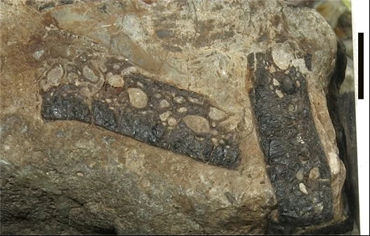
Figure 46. Turtle shell fragments in cross-section in greenish-grey sandstone in the lower part of the Grès Supérieurs, Koh Moul Island, Koh Kong Province. Scale bar = 10 mm.Source: Buffetaut et al. (2024), Proceedings of GEOSEA 2024, Khon Kaen, 55–63, Figure 6. Credit: Buffetaut et al. 2024.
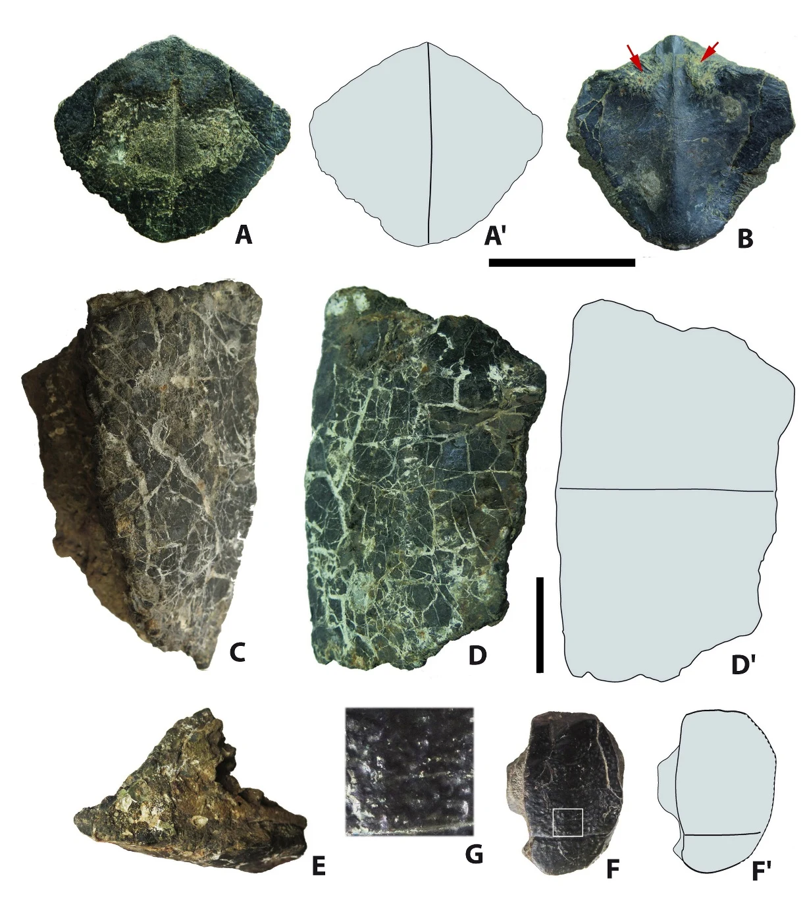
Figure 47. Turtle specimens from Koh Moul: (A, B) entoplastron (MOEC-2) in ventral and dorsal views; (C–E) bridge peripherals (MOEC-4) in dorsal, ventral and anterior views; (F, G) costal fragment (MOEC-3) and close-up of its ornamentation. Red arrows indicate scars. Scale bar = 5 cm.Source: Tong et al. (2026), Turtle remains from Koh Moul (SW Cambodia) and their stratigraphical implications, Diversity 18(5), 249, Figure 2. Credit: Tong et al. 2026 (CC BY 4.0).
Phnom Khley Black Shale Section in Kampot
10.612, 104.385 · indicative_source_position
View location mapAt Phnom Khley, black shale occurs between sandstone beds of the Bokor Formation. Organic microscopy and measured sections document the sedimentary succession; the multi-site figures include other Kampot sections.
Geology and mineralogy: Alginite and bituminite are organic macerals; pyrite is a mineral reported in the study
Coordinate provenance
Basis: Published measured section. Source: Heng et al. 2022.
Original coordinate expression: Phnom Khley, Kampot Province.
100 m long by 50 m high section of interbedded sandstone and organic black shale in Bokor Formation.
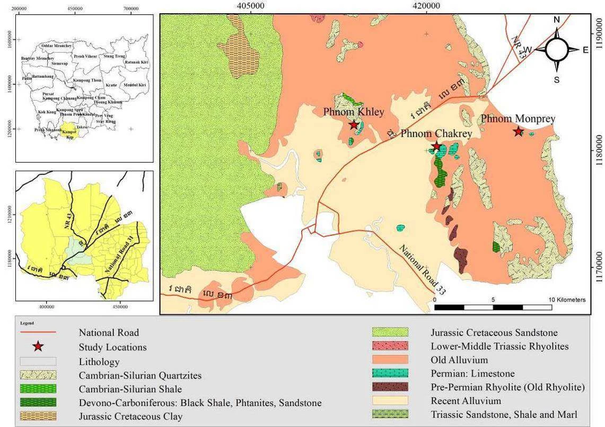
Figure 32. Published study location map of black shale outcrops in Kampot Province, southern Cambodia.Source: Heng et al. (2022), International Journal of Oil, Gas and Coal Engineering 10(4), 90–96, Figure 1. Credit: Heng et al. 2022.
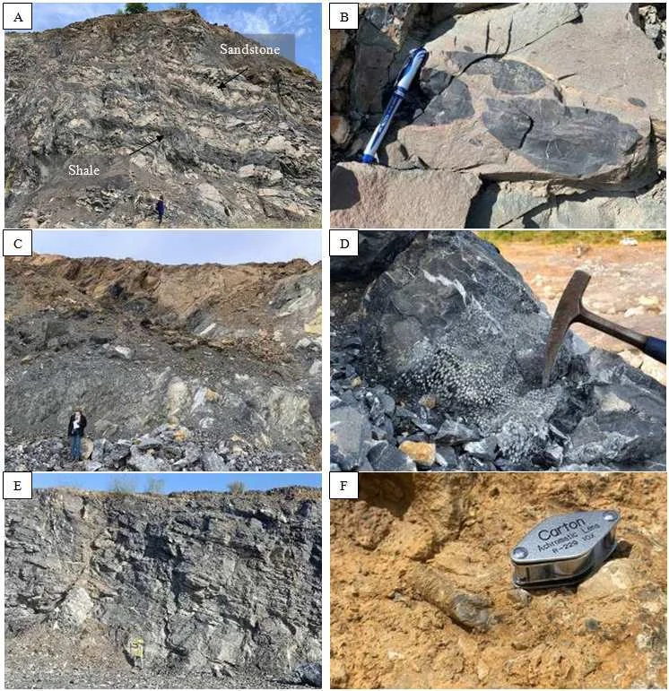
Figure 33. Outcrop photographs of Bokor Formation shale, interbedded sandstones, and marine invertebrate fossils.Source: Heng et al. (2022), International Journal of Oil, Gas and Coal Engineering 10(4), 90–96, Figure 2. Credit: Heng et al. 2022.
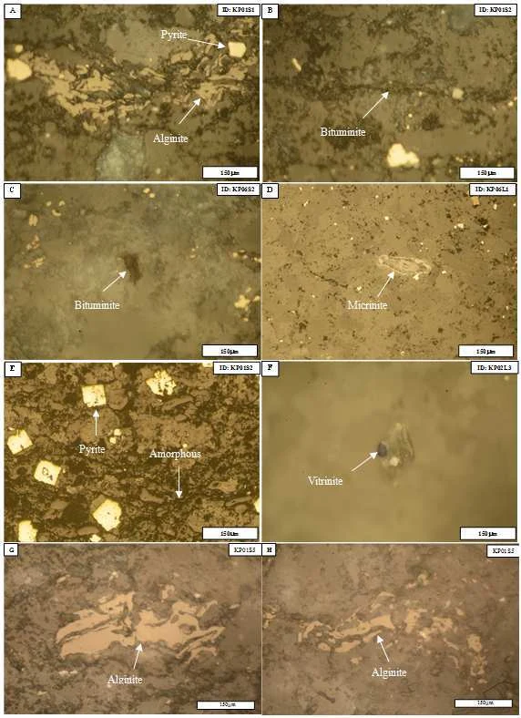
Figure 34. Photomicrographs of shale macerals in the Bokor Formation taken under reflected white light.Source: Heng et al. (2022), International Journal of Oil, Gas and Coal Engineering 10(4), 90–96, Figure 4. Credit: Heng et al. 2022.
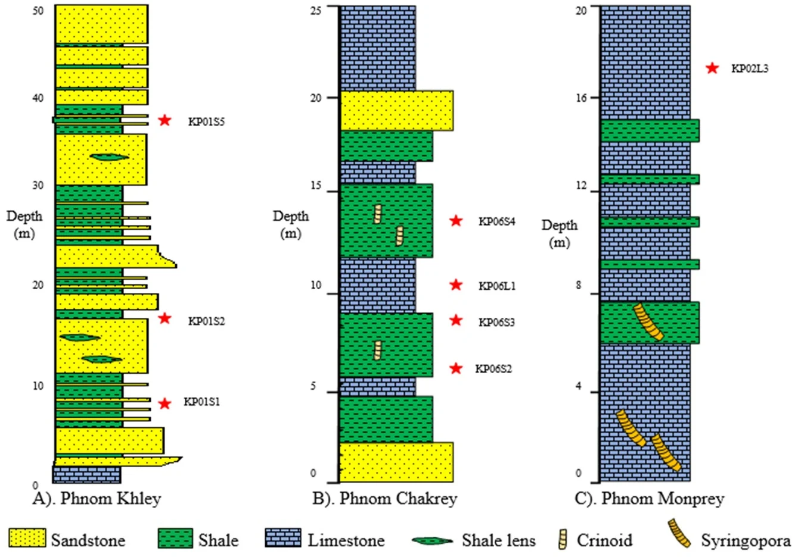
Figure 35. Stratigraphic columns of the Bokor Formation outcrop sections in Kampot Province: (A) Phnom Khley, (B) Phnom Chakrey and (C) Phnom Monprey. Red stars mark the stratigraphic positions of the analysed samples.Source: Heng et al. (2022), International Journal of Oil, Gas and Coal Engineering 10(4), 90–96, Figure 3. Credit: Heng et al. 2022.
Phnom Monprey Section in Kampot
10.635, 104.421 · indicative_source_position
View location mapThe Phnom Monprey section contains limestone and shale with reported Syringopora corals. Published outcrop photographs, stratigraphic columns and organic microscopy connect marine fossils with the Bokor Formation study.
Geology and mineralogy: Limestone and shale; organic macerals reported in the source study
Coordinate provenance
Basis: Published outcrop section. Source: Heng et al. 2022.
Original coordinate expression: Phnom Monprey, Kampot Province.
Dark grey limestone and shale section preserving fossil Syringopora tabulate corals.
Figure 32. Published study location map of black shale outcrops in Kampot Province, southern Cambodia.Source: Heng et al. (2022), International Journal of Oil, Gas and Coal Engineering 10(4), 90–96, Figure 1. Credit: Heng et al. 2022.
Figure 33. Outcrop photographs of Bokor Formation shale, interbedded sandstones, and marine invertebrate fossils.Source: Heng et al. (2022), International Journal of Oil, Gas and Coal Engineering 10(4), 90–96, Figure 2. Credit: Heng et al. 2022.
Figure 34. Photomicrographs of shale macerals in the Bokor Formation taken under reflected white light.Source: Heng et al. (2022), International Journal of Oil, Gas and Coal Engineering 10(4), 90–96, Figure 4. Credit: Heng et al. 2022.
Figure 35. Stratigraphic columns of the Bokor Formation outcrop sections in Kampot Province: (A) Phnom Khley, (B) Phnom Chakrey and (C) Phnom Monprey. Red stars mark the stratigraphic positions of the analysed samples.Source: Heng et al. (2022), International Journal of Oil, Gas and Coal Engineering 10(4), 90–96, Figure 3. Credit: Heng et al. 2022.
Bokor Plateau Sandstone and Cloud Forest in Kampot
10.627, 104.025 · indicative_source_position
View location mapThe Bokor sandstone plateau supports stunted forest, wetland and sphagnum bog habitats. Nutrient-poor sandy substrates and drainage help explain the vegetation mosaic. The gallery includes historical escarpment and forest photographs.
Geology and mineralogy: Quartz-rich sandstone; sandy weathering products
Coordinate provenance
Basis: Published botanical and geomorphological survey midpoint. Source: Rundel & Middleton 2017.
Original coordinate expression: Bokor Plateau, Preah Monivong National Park.
High-altitude (~1,000 m) quartz sandstone plateau with stunted cloud forest and 22 endemic plant species.
Figure 36. South-facing sandstone escarpment of the Bokor Plateau looking out to the Gulf of Thailand, with Phu Quoc Island (Vietnam) in the distance, March 2001.Source: Rundel & Middleton (2017), Cambodian Journal of Natural History 2017(1), 17–37, Figure 1. Credit: © Rasoul Sharifi.
Figure 37. Stunted forest of the Bokor Plateau with emergent trees of Dacrydium elatum, March 2001.Source: Rundel & Middleton (2017), Cambodian Journal of Natural History 2017(1), 17–37, Figure 2. Credit: © Philip Rundel.
Figure 38. Transition from montane wet evergreen forest to stunted forest near Popokvil Waterfall on the Bokor Plateau, March 2001.Source: Rundel & Middleton (2017), Cambodian Journal of Natural History 2017(1), 17–37, Figure 3. Credit: © Rasoul Sharifi.
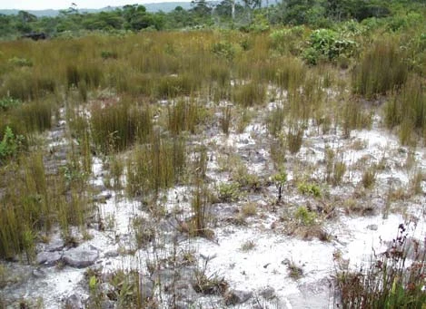
Figure 39. Sphagnum bog and seasonally waterlogged wetland on white sandy soil in poorly drained areas of the Bokor Plateau, March 2001.Source: Rundel & Middleton (2017), Cambodian Journal of Natural History 2017(1), 17–37, Figure 4. Credit: © Rasoul Sharifi.
Figure 23. Bokor hill station landscape photographed in 2010.Source: Kosterin (2010), IDF-Report 29, 1–75, Figure 31, PDF page 42. Credit: Oleg E. Kosterin; Kosterin 2010, Figure 31.
Phnom Sampeu La Ang Pracheu bat cave in Battambang
13.026548, 103.099832 · datum_unconfirmed
View location mapLa Ang Pracheu is a named bat cave at Phnom Sampeu. The limestone hill links cave development, bat habitat and cultural heritage. The source report’s coordinate datum remains unconfirmed.
Geology and mineralogy: Limestone karst; no site-specific mineral analysis
Coordinate provenance
Basis: Published GPS observation. Source: Karst Biodiversity Report 2026, p.17, Table 1, C-32.
Original coordinate expression: 13.026548 N, 103.099832 E.
A named cave record, not entire hill boundary. Report coordinate datum not explicitly verified; WGS84 interpretation requires confirmation.
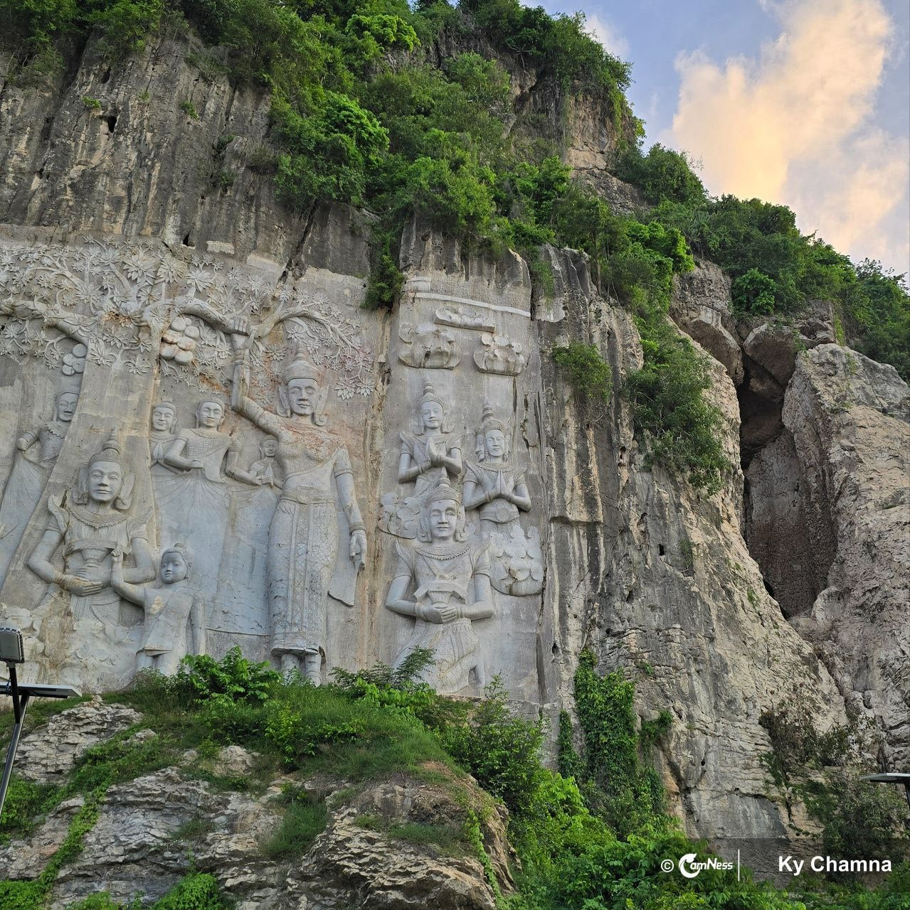
Phnom Sampeu: cliff carvings beside a rock opening.Visible credit: CamNess / Ky Chamna.
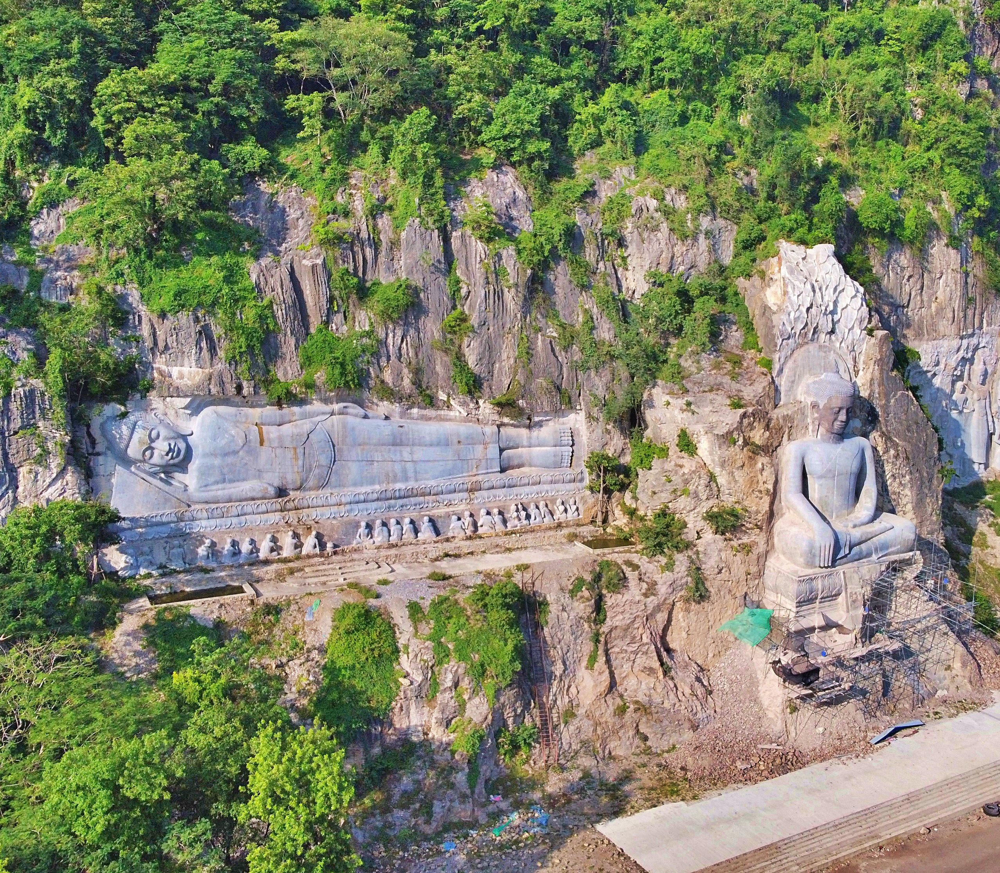
Phnom Sampeu: reclining and seated Buddha carvings on the cliff face.User-supplied photograph; photographer not identified in the supplied image.
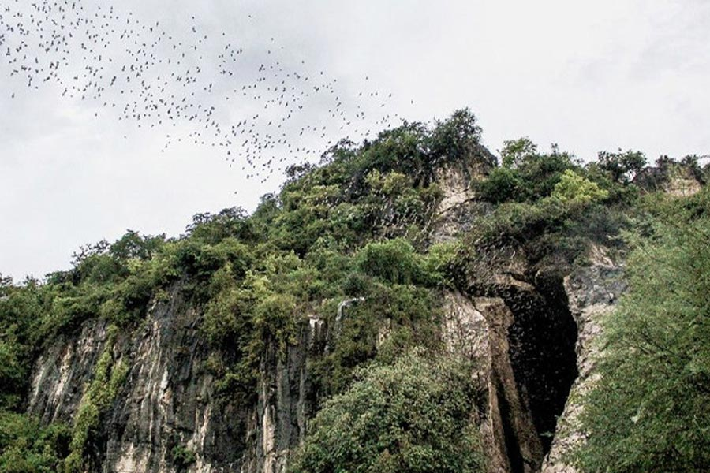
La Ang Pracheu, Phnom Sampeu: bats emerging above the cave and limestone cliff.User-supplied photograph; photographer not identified in the supplied image.